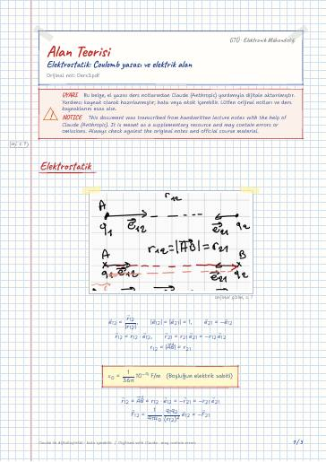

Electromagnetic Field Theory · Digital lecture note
Lecture 3 – Electrostatics: Coulomb's law and the electric field
Elektromanyetik Alan Teorisi – Elektrostatik: Coulomb yasası ve elektrik alan
- Course
- Electromagnetic Field Theory (ELM341)
- Semester
- Semester 5 · Fall 2023–24
- Format
- PDF · 5 pages · 0.3 MB · handwriting-style LaTeX
- Language
- Turkish
- Original note
- Ders3.pdf
Open the PDF (0.3 MB)LaTeX source (.tex)Original handwritten note

Notice: The digital notes were created from the handwritten notes with the help of Claude (Anthropic); they are meant as a supplementary resource and may contain errors. Always rely on the original notes and the official course materials.
What is in this note?
Section headings of the note (in Turkish):
- Elektrostatik
- Uygulama
Text of the note
Show as plain text (Turkish; formulas and drawings are not included)
q_1· q_2 > 0 ise güçler birbirini iter
İkiden fazla yük halinde superposition ilkesi geçerlidir
Eğer yükler ayrık değil, sürekli bir yoğunlukta dağılmışsa
hacimsel yük yoğunluğu: = dQdv (C/m^3)
q_1 durgun ve q_2 hareketliyse Coulomb yasası bir yönde geçerlidir. Durgunun hareketliye olanı geçerlidir.
(Kesirde pay ve paydadaki | r| ve r^3 çarpanları çizilerek sadeleştirilmiş.)